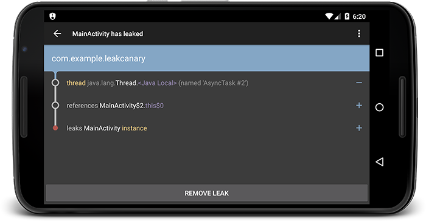

内存泄漏分析
前面我们已经介绍了内存分析可疑使用MAT和Memory Profiler，实际上内存泄漏的分析就是内存分析的一种。 在手机上一个app的可用内存非常宝贵，因此我们队内存泄漏的处理也是一场持久战，由于产品不断迭代，每个版本都需要定期分析处理。
案例
现在我们来看一个内存泄漏的例子，并通过不同工具来分析
Memory Profiler
假设我们闲杂有一个demo，不确定有没有内存问题，因此可以先用工具分析一下。 首先dump出当前的heap，并通过Memory Profiler直接查看，我们根据包名来简单归下档。
通过查看我们的包名下的对象，发现有两份MockData, 没有发现其他内存占用明显较大的对象；并且直接查看也不是很直观，仅仅是一些列表。
MAT
aven-mac-pro-2:platform-tools aven$ ./hprof-conv -z ~/Desktop/leak.hprof ~/Desktop/convert-leak.hprof
前面一节我们已经介绍了MAT的使用，现在我们打开hrof文件，更细致的排查一下。
Leakcanary
在开发中，我们也经常集成LeakCanary来快速发现问题，在发现问题的效率上更高一些。
接入LeakCanary可以查阅官方文档，主要是依赖配置和接口调用，下面简单说一下：
dependencies {
debugImplementation 'com.squareup.leakcanary:leakcanary-android:1.5.4'
releaseImplementation 'com.squareup.leakcanary:leakcanary-android-no-op:1.5.4'
}
public class ExampleApplication extends Application {
@Override public void onCreate() {
super.onCreate();
if (LeakCanary.isInAnalyzerProcess(this)) {
// This process is dedicated to LeakCanary for heap analysis.
// You should not init your app in this process.
return;
}
LeakCanary.install(this);
// Normal app init code...
}
}
后续如果发生内存泄漏问题，会有通知栏提示,可以查看泄漏详情：
